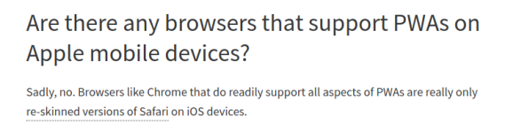
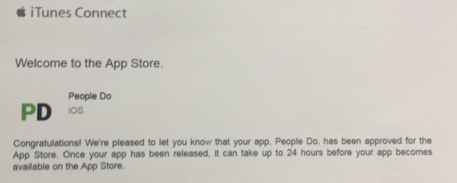
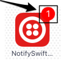

PWA в 2017: плюсы, минусы и грабли,
а также набор хаков, чтобы все работало на iOS
Плесских Иван
Калибровка на аудиторию
Знаете что такое PWA?
Используете?
Почему нет?
Быстрое введение в тему
Что говорит гугл про PWA?

Тема раскрыта слабовато (особенно в рунете)
Быстрое введение в тему
Progressive Web App (PWA) is a term used to denote web applications that use the latest web technologies.
Серьёзно?
Progressive Web Apps, also known as Installable Web Apps or Hybrid Web Apps, are regular web pages or websites, but can appear to the user like traditional applications or native mobile applications. The application type attempts to combine features offered by most modern browsers with the benefits of mobile experience.
Быстрое введение в тему своими словами
- Обычный сайт (или SPA), https
- Работа offline
- Пуши
- Отдельная иконка на мобилках
- ???
- PWA!
Зачем вообще нужно?
- Работа offline
- Пуши
- Отдельная иконка на мобилках
- Выше в поисковой выдаче (+ https)
Главные преимущества приложений,
но не паримся с самим приложением!
Калибровка на аудиторию
Мобильное приложение есть/надо?
Разработчиков искали/ищете?
Долго искали/как успехи?
Прекрасный новый мир
Никаких больше нативных приложений!
Никаких больше айоcников и андроидщиков!
(винфоны все равно никто не использует)
(но PWA на них работать будут, Microsoft обещает)
Bye Java, Kotlin, Swift, Obj-C, C# and more and more...
ALL HAIL JAVASCRIPT!
Примерно так это расписывает гугл,
который и продвигает PWA
Но, как всем нам прекрасно известно,
у любой утопии есть изнанка...
А серебрянные пули — сказка для взрослых,
уставших от несовершенства этого мира
Трезвый взгляд
- Медленно (но...)
- Неполноценно (но...)
- Android-only (но...)
Скорость
Все же, это веб, со всеми вытекающими
Но прямыми руками его можно и разогнать
Что сложнее, чем сделать быстрое приложение,
но сложность компенсируется синергией
Ведь ускорение PWA ускоряет и сайт!
К теме синергии ещё вернемся
Ограниченность
Опять же, это веб.
Но, на самом деле, многим и этого хватит
Для content-first сайтов - вариант отличный
Пример, упирающийся в ограничения веба?
Нет, я не забыл его вписать, просто не знаю
Поддержка
Chrome for Android (и то с ограничениями)
Обязателен, собственно, Chrome (что не так критично)
Установка нова для пользователя (но это поправимо)
iOS в пролёте (но можно кое-что накостылять)
А Windows 10 Mobile все равно никто не пользуется :)
(но Microsoft обещает что PWA у них будет, ждём)
Наше приложение
- Мессенджер
- SPA, React+Redux
- Мобила очень нужна
- iOS в приоритете
Завязка
Есть сайт, очень нужна мобильная версия,
причем в основном под iOS
Айосников в Челябинске...
Неосторожно пророненное мной "PWA" рождает искру
В итоге ПМ постановляет: будем пробовать
И сразу развязка
Есть приложения для Android и iOS
Под андроид (пока) ставится через хром
Костылей под iOS в js не так уж и много
App Store одобрил
На айоснике сэкономили :)
Промежуточные выводы
В идеале все делается очень просто
В реальности тоже не слишком сложно
Синергия действительно работает
Обновления доставляются моментально
Упрощает проверку гипотез
Сафари - это новый Internet Explorer
Калибровка на аудиторию
Сафари кто-нибудь любит?
А мобильный?
А как разработчик? :)
Лирическое отступление — косяки Сафари
Ориентация фотографий в EXIF
Решение — крутить фотки на сервере
Не позволяет отправить созданный вручную файл
Решение — не отправлять созданные вручную файлы
Аттрибут download на теге a игнорируется
Решение — явно открывать файл в новой вкладке
Косяки Сафари: часть 2
Не снимает фокус с поля ввода при клике в никуда
Решение — установить tabindex на body
Но тогда при клике в никуда все моргает серым
Решение — -webkit-tap-highlight-color: transparent
Почему не использовать кнопку "Done"?
Об этом — далее
Косяки Сафари: часть 3
fetch косячит в 11.0 (в 11.1 нормально)
fetch('http://example.com/fkin-big.file')
.then(function(resp) {
resp.clone()
resp.clone() //здесь может быть event.respondWith
}).catch(function(err) {
console.log(err.message)
})
"Cannot clone a disturbed Response"
Решение — использовать полифилл
Шаги для Android
- Идём в гугл
- Добавляем манифест
- Добавляем service worker
- Немного колдуем с FCM
- Охапка дров
- PWA готов!
Результат на Android
Места не занимает вообще (ну... Только кеш :)
Но требует Хром, что плохо
Ставится легко, но сложно
Под силу даже бухгалтеру
Нет тонкого управления пушами
Можно сделать обычное приложение
Шаги для iOS
- Идём в гугл
- 
- Всё ещё любите Сафари?
- Снова идем в гугл, много ищем
- Покупаем Mac
- Напряженно костыляем
- Псевдо-PWA готов!
Результат на iOS
Выглядит как обычное приложение
Использует PhoneGap с кучей костылей плагинов
Верстаем под обычный мобильный Сафари
Места занимает мало, WebView на марше
Обновления благодаря WebView видны сразу
Чтобы все заработало, пришлось постараться
App Store Story
Одобрено
Мы думали, будет гораздо сложнее
PhoneGap Tale I
Необходимо дать сайту доступ к Cordova API
Решение — cordova-plugin-remote-injection
Надо запретить левым сайтам доступ к Cordova API
Решение — cordova-plugin-whitelist
В исключения добавляем домены стейджинга
Используем ngrok для разработки в условиях,
максимально приближенных к боевым
PhoneGap Tale II
Нужны пуши
Решение — cordova-plugin-fcm
Он же позволяет установить бейдж на иконке 
APNS content-available — пришлось допиливать
Отписка от пушей — та же история (метод kill)
PhoneGap Tale III
Плагин для FCM ломает компиляцию приложения
Решение — вручную скопировать нужный файл
Отписка от пушей не работает в оффлайне
Решение — не давать отписываться в оффлайне
PhoneGap Tale IV
Первый запуск приложения должен быть онлайн
Решение — ErrorUrl + настройка remote-injection
Полоска над iOS клавиатурой
Решение — cordova-plugin-keyboard + HideKeyboardFormAccessoryBar
PhoneGap Tale V
phonegap-plugin-service-worker не реджектит fetch при ошибках сети
Решение — использовать форк с fetch полифиллом
Кеш плагина сильно раздувается
Решение — использовать форки (?),
кастомная логика сброса кеша через postMessage
PhoneGap Tale VI
Отладка?
XCode, console.log, Safari Remote Debug, weinre
Проблемы со сборкой
(не отображаются изменения в файлах)
Решение — cd ../.. && phonegap prepare ios
в Build Phases
PhoneGap Tale X
Просто набор плагинов, которые нужны для начала
cordova-plugin-badge
cordova-plugin-console
cordova-plugin-inappbrowser
cordova-plugin-media-capture
cordova-plugin-splashscreen
cordova-plugin-statusbar
Итоги
PWA сейчас на хайпе, но ещё не взлетели
Применять можно уже сейчас,
хотя не хватает нормальных полифиллов
Как минимум, стоит ознакомиться,
чтобы потом не было мучительно больно
Спасибо за внимание!
Ищем айосника, $300 за рекомендацию :)
gudex-start.tilda.ws